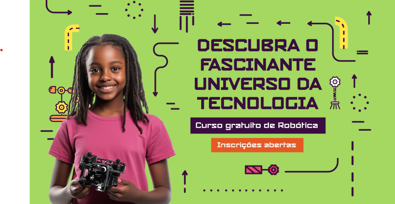

Avalia SESI mudança de data para realização da prova
O Avalia SESI é a chance de mostrar tudo o que você aprendeu durante o semestre. Com algumas estratégias simples, é possível estudar de forma eficiente e aumentar muito suas chances de sucesso. 1. Revise os conteúdos do semestre O primeiro passo é revisar todas as matérias que você estudou nas aulas. Em Português, releia textos, revise gramática e pratique interpretação de textos. Em Matemática, refaça exercícios de operações, frações, porcentagens, equações, proporções e geometria. Para Ciências, revise os temas abordados nas aulas, como energia, ecossistemas, corpo humano, química e física básica. 2. Faça simulados e exercícios antigos Refazer listas de exercícios, provas anteriores ou simulados ajuda a fixar os conteúdos e a identificar onde você ainda precisa se aprofundar. Cronometre seu tempo para treinar o ritmo da prova. 3. Organize seus estudos Monte um cronograma diário, dedicando tempo para cada matéria e reservando momentos para revisar conteúdos mais difíceis. Isso ajuda a manter o foco e o ritmo até o dia da prova.

Por que participar da Robótica do SESI-SP?
A robótica é muito mais do que montar robôs: é uma experiência que transforma sua forma de aprender e pensar. No SESI-SP, você vai programar, criar projetos inovadores e participar de desafios que desenvolvem raciocínio lógico, criatividade e trabalho em equipe. Além de aprender sobre tecnologia de forma prática e divertida, você vai viver momentos únicos em competições incríveis, como a FIRST LEGO League, que reúnem equipes de todo o Brasil e do mundo. Participar da robótica também abre portas para o futuro: bolsas de estudo, oportunidades em carreiras de tecnologia e um currículo valorizado pelas melhores universidades.